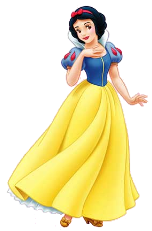
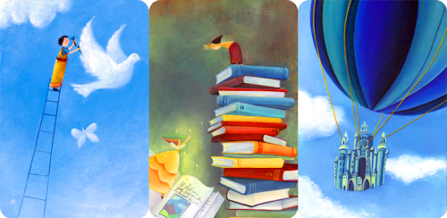

TAINA ASCULTARII
SAU POVESTEA CALUGARULUI CARE BATEA BUSTEANUL
data, langa o Manastire, traia un om. Si omul acela avea un baiat care iubea mult biserica, asa ca intr-o zi s-a dus la tatal lui si i-a spus: "Tata, as vrea sa ma duc la Manastire, sa ma fac Calugar." Tatal s-a gandit putin, apoi i-a raspuns: "Asteapta pana maine si vom vedea." Baiatul insa nu a asteptat, asa de mare era dorul pe care il simtea, asa ca a doua zi de dimineata s-a trezit si s-a dus la Manastire. Si cum statea el acolo si nu stia incotro sa o ia, a venit la el Staretul Manastirii, care i-a spus: ...
Continua singur
sau
afla sfarsitul Povestii
POVESTEA DRAGONULUI SI A SPIRIDUSULUI CEL CURAJOS
Astazi, dupa cum bine stiu unii, dragoni nu mai exista. Dar de mult de tot, pe cand Pamantul asa cum il stim era inca intr-un Ou, iar pe Pamantul acela vechi erau Imparatii iar Printi curajosi se bateau cu Zmei rai cat era ziua de lunga si salvau Printese cu cosite de aur, un Dragon urias isi avea salasul sub pamant. Cand se infuria, Dragonul nostru scotea flacari pe nari (stiti doar ca asa fac lighioanele, in special balaurii), iar ragetul lui se auzea din strafundul pamantului. Atunci pamantul se cutremura iar stanci si flacari erau azvarlite pana la cer! Daca nu ma credeti, veniti sa vedeti cu ochii vosti, căci inca se mai vede gura sa plina de zgura...
Continua singur
sau
afla sfarsitul Povestii
* * * * * * *
POVESTEA CELOR DOUA LEBEDE
La inceputul vremii, demult, tare demult, pe cand nici Pamantul nu era si cat cuprindeai cu ochii era doar Apa, pe intinderea acesta de Ape pluteau doua Lebede. Una era negra precum taciunele, alta alba ca zapada.
Si cum pluteau ele pe apa linistita, Lebada Alba ii zise celei Negre: du-te pe fundul apei si adu-mi putin pamant ca sa fac Pamantul. Auzind, pe data Lebada Neagra se scufunda si aduse in cioc putin pamant. Dar cand sa i-l dea Lebedei Albe, nu i-l adu pe tot, ci mai pastra in cioc niste farame de pamant.
Continua singur
sau
afla sfarsitul Povestii
* * * * * * *
POVETEA VRAJITOAREI SI A CELOR 1000 DE PITICI
Demult, tare demult, cam prin locurile pe unde ne plimbam noi astazi era un Munte inalt si pe tot Muntele se intindea o mare Cetate. Stapana in Cetate era o Vrajitoare rea. Toata ziulica o multime de Pitici sapau in strafundurile Pamantului ca sa scoata Aur pentru Vrajitaore. Si daca dadea piaza rea si ramanea un fir de aur in barba vreunui Pitic, pe dat' il apuca Vrajitoarea de barba si uite-asa il invartea pe saracut pana ii cadea si ultimul fir de aur din barba.
Intr-o zi, pe cand umbrele se lungira iar soarele pasea cascand spre asternut, un Pitic iesi din mina cu tarnacopul pe umar si un felinar in varful nasului ...
Continua singur
sau
afla sfarsitul Povestii
* * * * * * *
Citeste mai multe Povesti pe siteul Cavalerului Ted si a Printesei Sara